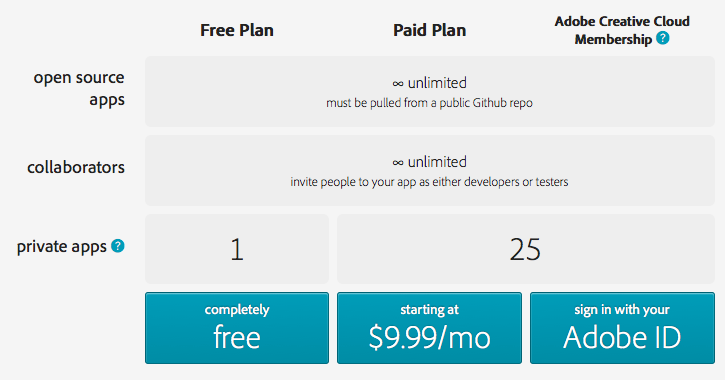
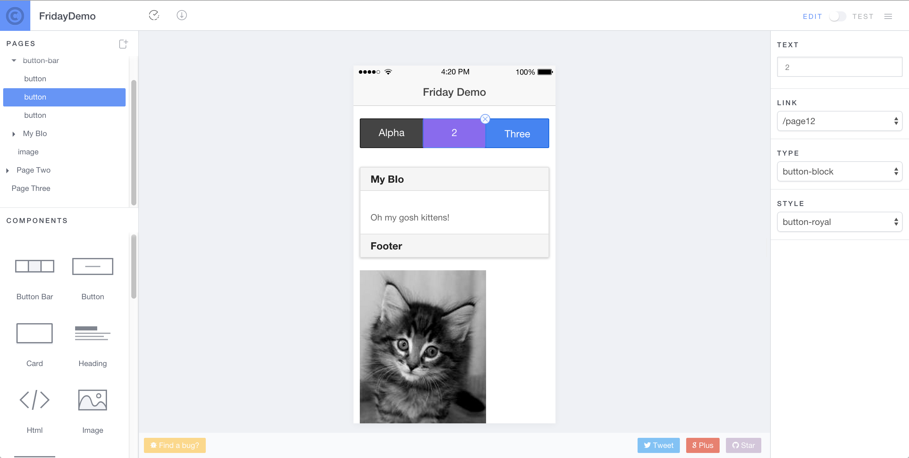
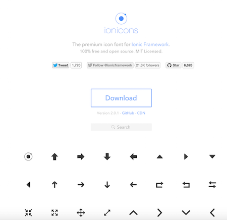
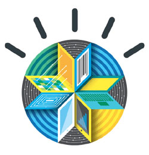
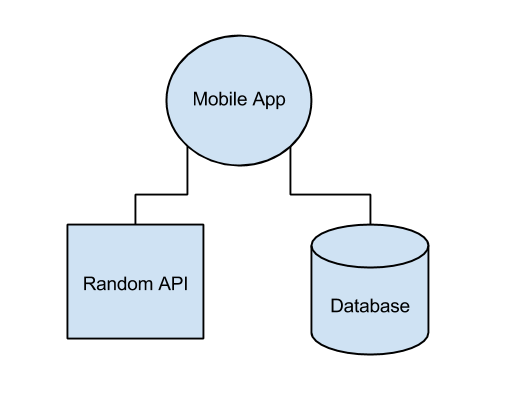
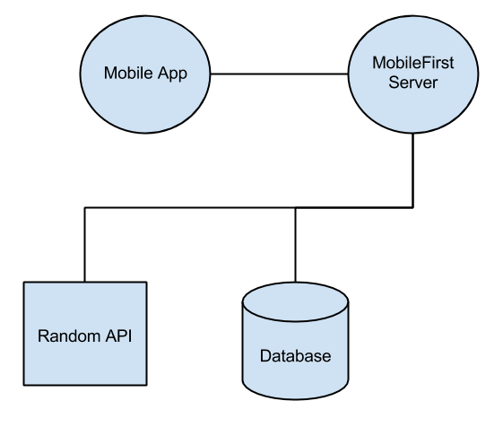

Cordova + Ionic + MobileFirst
Who am I?
- Developer Advocate for IBM
- Focused on MobileFirst and Bluemix
- Web Standards, HTML5, JavaScript, Mobile, ColdFusion
- www.raymondcamden.com
- @raymondcamden

First time in Malaysia!
Agenda
- Apache Cordova (hybrid apps)
- Labs
- Ionic (better hybrid apps)
- Labs
- IBM MobileFirst (even better hybrid apps)
While I talk...
- If you don't have npm, download Node.js (just to get npm)
- Figure out what your favorite editor is
- Check Facebook because why not
PART ONE - CORDOVA
Genesis (of PhoneGap)
- Built at an iPhoneDevCamp in 2009
- Started by Nitobi
- Adobe bought Nitobi (2011)
- Currently at 5.1.1
$$$?
- PhoneGap is free
- No, really, free
- Open Source
Apache Cordova
- cordova.apache.org
- PhoneGap is Adobe's implementation
- PhoneGap == Cordova
Let's get techy
- Creates "Hybrid" applications
- Native wrapper around a web view
- HTML (CSS,JS) handles layout
- Cordova "bridges the gap" to native capabilities
About that gap...
- Cordova tries to follow standards
- When it doesn't need to do anything, it doesn't
- In the perfect world, Cordova won't exist
Supported Platforms
- iOS
- Android
- Windows Phone 8
- BlackBerry 10
Super Long URL (docs.cordova.io)
Other Platforms
- Firefox OS
- Amazon Fire OS
- Ubuntu
- Tizen
- Windows 8
Features (Stuff you can do with JavaScript!)
- Accelerometer - when the device moves
- Camera - pictures of your cat
- Capture - audio, video, stills of your cat
- Compass - for when you're lost in the woods
- Connection - type of connection
Features
- Contacts - find and create new friends
- Device - device and OS version metadata
- Events - various app/hardware related events
- File - native file system access (and upload/download)
- Geolocation - for when you're lost in the woods
Features
- Globalization - date/number/currency formatting
- Media - related to audio playback (supports record as well)
- Notification - visual, audible, and tactile notifications
- Splashscreen - for your splash screen needs
Features
Plugin API for anything you can imagine...
Unofficial Features
- Use any of the 10 million JavaScript libraries
- Use any of the 10 million APIs
- Deploy to app store
Non-Features
- UI
- UX
- Native Killer
Who is using Cordova?
Real World Demo
How is it done?
- Going from HTML to Binary
- Making use of the "special" stuff
- Thinking Differently
How is it done?
- Install Node
- Install cordova via npm: sudo npm install -g cordova (Windows folks open your command prompt as an Admin)
- Get SDK(s) (technically optional)
How is it done?
- Command line init to create the project
- Switch to your editor
- Edit HTML, simulate, build (via CLI)
Demo
I'll show creating a project and explain what the folders represent.
Adding Platforms
- cordova platforms add X (to add something)
- cordova platforms (to report)
Demo
I'm going to show adding iOS and Android as well as checking what is there/installed.
Building/Emulating/Testing
- prepare
- compile
- build == prepare + compile
- emulate
- run
My Cycle
- edit stuff
- cordova emulate
Demo
How do we do the awesome?
- Include cordova.js (this will NOT exist in www)
- Wait for "deviceready" event
- plugins for each feature (so to do X, you add the plugin X)
- config.xml (handles settings)
Demo
I'm going to demo the camera API and totally screw it up.
Plugins
- All core features use plugins
- Additional features use plugins
- Everything driven from CLI (list, add, and remove)
Demo
Let's fix the camera demo.
Demo
Let's show a few more: demos/contactpickerui, demos/camera_vintagagejs, demos/mp3
Real World Building
- Desktop Browser
- Mobile via Web
- Ripple Emulator
- Local SDK to Simulator/Device
Desktop Browser
- Pro: Super Fast
- Pro: No setup
- Pro: Debugging Rocks
- Con: UI isn't right
- Con: UX isn't right
- Con: Features missing
- Con: Security restrictions
Mobile Via Web
- Pro: Kinda Fast
- Pro: Minimal setup
- Pro: UI and UX testing
- Con: Features missing
- Con: Security restrictions
- Con:
Debugging sucks
Ripple Emulator
- Pro: Fast
- Pro: Similar UI
- Pro: Free
- Pro: Security restrictions gone
- Con: Not 100% supported
- Con: Still not on the device
Local SDK to Simulator/Device
- Pro: The Real Deal
- Con: Slow(ish)
- Con: Not Free
- Con:
Debugging *really* sucks
TO BE CLEAR: YOU MUST ALWAYS TEST ON A REAL DEVICE
What Ray Does (most of the time...)
- Desktop
- iOS Emulator
- Genymotion for Android: http://www.genymotion.com
- (Ray, show this)
Testing
Testing
On Desktop, just continue to use dev tools.
Testing
On Mobile, just continue to use dev tools.
Remote Debug
- Safari for iOS, Chrome for Android
- "Full" dev tools for mobile web or Cordova
Demo
GapDebug
https://www.genuitec.com/products/gapdebug/
Demo
So what about that whole "think different" thing?
User Interface
Suggestions
- Libraries (like Bootstrap)
- Responsive design and testing in general
User Experience
Suggestions
- Libraries (again)
- Testing on devices
- Handling offline with client-side storage
Architecture
Suggestions
- Single Page Architecture
- AngularJS, jQuery Mobile, etc
All In One Solution

ionicframework.com
PhoneGap Build

The 411
- Web based platform to do builds
- Supports iOS, Android, Windows Phone, Blackberry, webOS, Symbian
- Has an API too
- NO SDKS NO COMPILING NO MESS!
$$$
Demo
PhoneGap Developer App
Connects your desktop to your physical device (ios, android, windows phone)
Demo
What to go next?
- Help - Google Group for PhoneGap
- Developers - people.phonegap.com
- cordova.apache.org
- plugins.cordova.io
"Apache Cordova in Action"
manning.com/camden
Thank You!
What is it?
"The beautiful, open source front-end SDK for developing hybrid mobile apps with HTML5."ionicframework.com
What's In it?
Another UI Framework!!!!
CLI
WTF
What's In it?
- UI components
- UX components
- SPA Framework (AngularJS)
- Built for Hybrid Mobile development (Cordova)
Cordova

Cordova + Ionic
Open Source and Free
What You Need to Know
- PhoneGap/Cordova
- AngularJS
Installation
- Zip download
- npm install
- TO BE CLEAR: It doesn't do Cordova/SDKs
sudo npm install -g ionic
The CLI
- Creates projects
- Handle plugins, platforms
- Emulate/Run
- Build/Package
- Update library
- Serve to Browser
- Handle Icon/Splash creation
- More
Project Creation
ionic start APPNAMEionic start APPNAME TEMPLATE- Templates: (can be listed from CLI)
- CodePen
- Directory
Demo
Ionic Testing/Emulating/Etc
- ionic serve
- ionic emulate/run
Demo
CSS Components
JavaScript
What we mean by JavaScript...
- UI stuff
- UX stuff
- Directives too!
Title!
BLUE
YELLOW
PINK

Demo
Routing
- Various directives
- ion-nav-view, ion-view, ion-nav-bar
Demo
Ionic Creator
creator.ionic.io
ionicons.com
Icon/Splashscreen Generation
Ionic View (view.ionic.io)

Playground
Ionic Market
market.ionic.io
Push Service (Alpha)
Analytic Service (Alpha)
- Track user interaction
- Heat maps
Deploy Service (Alpha)
- Deploy updates w/o app store updates
- Supports channels (for things like beta testers)
Build Service (Not Released yet)
Similar to PhoneGap Build but focused on Ionic apps.
More...
- Better Windows Phone support
- Better support for native scrolling
- Visual Studio template support
Learning More
- learn.ionicframework.com
- http://codepen.io/ionic/
- "Ionic in Action" - http://www.manning.com/wilken/
- "Cats with Cordova" - http://www.manning.com/camden/
- Title not final.
Cool examples: showcase.ionicframework.com
Real App
Warning - Sappy Story Coming
Summary
Cordova Good
Ionic Epic
Cordova + Ionic...
Part 3 - MobileFirst
FYI - 7.1
I'm using 7.1, which was VERY recently released.
MobileFirst
MobileFirst
- Supports mobile apps
- Mobile web, hybrid, native
- CLI to work with projects
- Server


Features
- Service Proxies
- Push notifications
- Version management
- Security
- Analytics
- Testing (IBM MobileFirst Platform Test Workbench)
- App Store (Enterprise-y)
More Features
- Client-side utilities
- Some examples:
- Get available wifi points
- Geography stuff (distance to...)
- Talking to a native class
- Logging framework
Parts
- MobileFirst Studio
- CLI
- Server
- Web console and analytics tool
Editions/How to use it
- IBM MobileFirst Platform Foundation Developer Edition
- IBM MobileFirst Platform Foundation
- A few other fancy versions we don't need to worry about today
Supported OS
- Windows
- Linux
- Mac
- AIX, Solaris
Installation
This is where I'll pretend to install stuff...
Product Link: http://www.ibm.com/mobilefirst/us/en/
Product Link: http://www.ibm.com/cloud-computing/bluemix/
To be clear, everything I'm showing is free for you to play with.
Working with the CLI
- Create a server (one time!)
- Start the server
- Create a hybrid MFP app
- Write code and iterate
Creating and Starting the Server
mfp create servername
mfp startDemo
Creating a Hybrid App
mfp cordova create
Demo
Working with Hybrid Apps
mfp cordova *
Demo
Back to Server
mfp push
mfp consoleDemo
Client-Side API
- Basically - "extended" features
- Logging
- Get WiFi points
- Call native functionality
- More...
- WL.* API
Demo
Adapters
- Glue between your mobile app and stuff
- Server-specific
- Java or JavaScript (reminder...)
- Setup via Studio or CLI
Adapters - Types
- HTTP
- SQL
- Cast Iron, Java, JMS, SAP JCo, SAP
Creating Adapters
mfp adapter add //create
mfp push //push and deploy changes
mfp adapter call //test
mfp adapter call adapter/procedure '["arg"]' //passing an arg